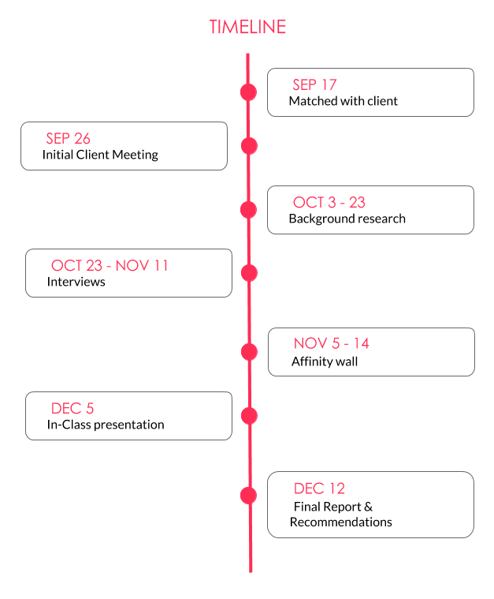
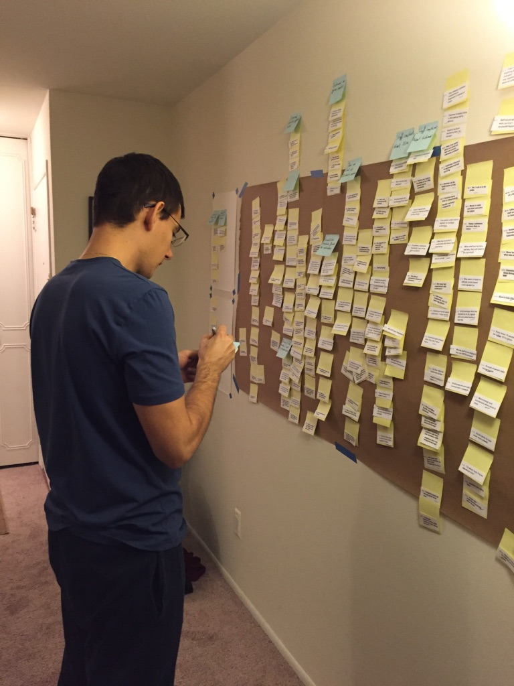
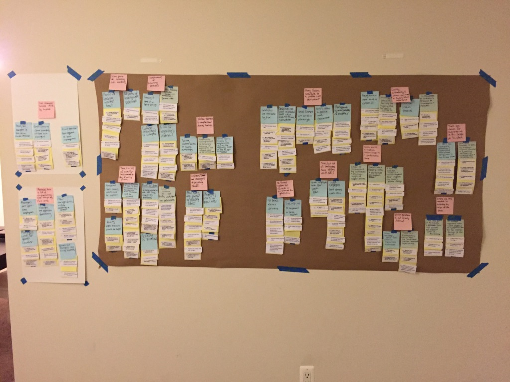

Iorio’s gelato makes authentic Italian gelato. They strive to make a genuine Italian gelato experience that includes the taste of the product, the design of the shop and the interaction between clients and staff. They want to make their customer’s lives more culturally rich by delivering the authentic Italian experience right in their town. They employ a fresh, modern approach to recreate the real Italian gelato. They utilize novel tools and knowledge, combined with using only real, natural and inspired by Italy ingredients. The goal of this project is to produce a recommendations report that the store owners could utilize to improve the customer experience. Below is a diagram showing with our timeline for this project.
Iorio’s wants our team to find ways in which the customer service flow could be improved. They care about every step in the process, starting from when a customer walks into the store, until the time they leave. Aspects of particular importance include the process to get a gelato, the waiting, tasting and checkout. They want the whole experience to be aligned with and authentically inspired by the Italian mission of Iorio’s. They are not only interested in receiving good service flow tips, but also would like to see a spotlight on potential weaknesses in their process with respect to their Italian mission. They want us to look at both their locations in Ann Arbor, as well as in East Lansing. Another point of interest Iorio’s has is getting recommendations on how to preserve the Italian experience when expanding to potential new locations.
In order to get insight into Iorio's business and brand, we explored their Ann Arbor location and reviewed their website. We also conducted a conversation with their owner, which provided us with information about their history, current state and vision for the future.
In order to understand Iorio's business better, each team member wrote a background research report. We focused on the following areas:
The report that I was responsible for was about the frozen dessert industry. The reports gave us insights into trends in the industry. We wanted to get a good understanding of the relevant factors that might affect Iorios' performance.
As part of our contextual inquiry, we conducted 7 interviews with the various stakeholders at Iorio's, including:
Below is one of the interview protocols that we used. The protocol shown is for an interview with the front line staff.
The data that we gathered during the interviews was synthesizes and analyzes by building an affinity diagram. That helped us to synthesize the information and be able to brainstorm on ideas together as a team.
 As a final deliverable to our client, we prepared a consulting report with recommendations on how to improve the customer service experience. The report included our detailed findings and discoveries. Recommendations were added for each area that was identified as notable and important. A copy of the report could be provided if requested.